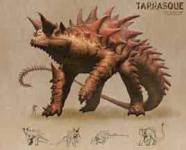
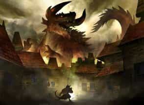

- Громадный? Монстр (титан), без мировоззрения
- Класс Доспеха 25 (природный доспех)
- Хиты 676 (33к20 + 330)
- Скорость 40 футов
- Сил30 (+10)Лов11 (+0)Тел30 (+10)Инт3 (-4)Мдр11 (+0)Хар11 (+0)
- Спасброски Инт +5, Мдр +9, Хар +9
- Иммунитет к урону огонь, яд; дробящий, колющий, рубящий от немагических атак
- Иммунитет к состоянию паралич?, очарование?, отравление?, испуг?
- Чувства слепое зрение? 120 футов, пассивное Восприятие 10
- Опасность 30 (155 000 опыта)
- Бонус мастерства +9
- Местность обитания город
Легендарное сопротивление (3/день). Если тараск проваливает спасбросок, он может вместо этого сделать спасбросок успешным.
Сопротивление магии. Тараск совершает с преимуществом спасброски от заклинаний и прочих магических эффектов.
Отражающий панцирь. Каждый раз, когда тараск становится целью заклинания волшебная стрела [Magic missile], заклинания с эффектом «линия», или заклинания, требующего бросок дальнобойной атаки, бросьте к6. При результате от «1» до «5» тараск не попадает под эффект заклинания. При результате «6» тараск не попадает под эффект заклинания, и эффект отражается в заклинателя, как если бы он исходил от тараска, делая целью заклинателя.
Осадное чудовище. Тараск причиняет двойной урон предметам и строениям.
Действия
Мультиатака. Тараск может использовать Ужасающее присутствие. Затем он совершает пять атак: одну укусом, две когтями, одну рогами, и одну хвостом. Вместо укуса он может использовать Проглатывание.
Укус. Рукопашная атака оружием: +19 к попаданию, досягаемость 10 футов, одна цель. Попадание: Колющий урон 36 (4к12 + 10). Если цель — существо, она становится схваченной (Сл высвобождения 20). Пока цель схвачена, она опутана, и тараск не может кусать другую цель.
Коготь. Рукопашная атака оружием: +19 к попаданию, досягаемость 15 футов, одна цель. Попадание: Рубящий урон 28 (4к8 + 10).
Рога. Рукопашная атака оружием: +19 к попаданию, досягаемость 10 футов, одна цель. Попадание: Колющий урон 32 (4к10 + 10).
Хвост. Рукопашная атака оружием: +19 к попаданию, досягаемость 20 футов, одна цель. Попадание: Дробящий урон 24 (4к6 + 10). Если цель — существо, она должна преуспеть в спасброске Силы Сл 20, иначе будет сбита с ног.
Ужасающее присутствие. Все существа на выбор тараска в пределах 120 от него, и знающие о его присутствии, должны преуспеть в спасброске Мудрости Сл 17, иначе станут испуганными на 1 минуту. Существо может повторять этот спасбросок в конце каждого своего хода, с помехой, если тараск находится в пределах линии обзора, оканчивая эффект на себе при успехе. Если спасбросок существа был успешным, или эффект на нем окончился, оно получает иммунитет к Ужасающему присутствию этого тараска на следующие 24 часа.
Проглатывание. Тараск совершает одну атаку укусом по схваченному существу с размером не больше Большого. Если эта атака попадает, цель получает урон от укуса, становится проглоченной, и захват прекращается. Будучи проглоченным, существо становится ослеплённым и опутанным, обладает полным укрытием от атак и прочих эффектов, исходящих снаружи, и получает урон кислотой 56 (16к6) в начале каждого хода тараска.
Если тараск получает в течение одного хода от находящегося внутри него существа урон 60 или больше, он должен в конце этого хода преуспеть в спасброске Телосложения Сл 20, иначе изрыгнет всех проглоченных существ, которые падают ничком в пространстве в пределах 10 футов от тараска. Если тараск умирает, проглоченное существо перестает быть опутанным им, и может высвободиться из трупа, используя 30 футов перемещения, и на выходе падает ничком.
Легендарные действия
Тараск может совершить 3 легендарных действия, выбирая из представленных ниже вариантов. За один раз можно использовать только одно легендарное действие, и только в конце хода другого существа. Тараск восстанавливает использованные легендарные действия в начале своего хода.
Атака. Тараск совершает одну атаку когтем или атаку хвостом.
Перемещение. Тараск перемещается на расстояние, не превышающее половину своей скорости.
Жевание (стоит 2 действия). Тараск совершает одну атаку укусом или использует Проглатывание.
Описание
Легендарный тараск, возможно, — самое страшное чудовище Материального Плана. Широко распространено мнение, что существует только одно такое существо, хотя никто не может предсказать, где и когда оно нападет.
Чешуйчатый и двуногий тараск достигает 50 футов в высоту, 70 футов в длину и весит сотни тонн. Он двигается словно хищная птица, наклонившись вперед и используя свой мощный, хлещущий хвост для равновесия. Его пасть, напоминающая пещеру, распахивается достаточно широко, чтоб проглотить что угодно, кроме самых огромных существ. И голод его настолько велик, что он может сожрать население целого города.
Легендарный разрушитель. Разрушительный потенциал тараска настолько велик, что в некоторых культурах он является частью религиозных учений, вплетающих его редкое появление в истории о божественном суде и гневе. Легенды гласят, что тараск дремлет в своем тайном убежище под землей, оставаясь в покое десятки и сотни лет. Просыпаясь в ответ на некий непостижимый космический зов, он восстает из глубин, чтобы уничтожить все на своем пути.
Тараск — Бестиарий
Тараск [Tarrasque]MM14 MM24
Галерея






Комментарии
У просто плута шансов нет:
- его оружие просто не наносит урона.
- перемещение на 20+40фт с мультиатакой почти наверняка смертельно, а рывок на 20+80фт позволяет тарраску догнать лошадь.
Вместо этого гуглим "аракокра изобретатель против тарраска" - там также обычно попутно раскрывается тема прыжков и кидания предметов. Речь о получасе игрового времени и небольшой горе стрел.
PS: ну и конечно же, ааракокра. С четырьмя "а".
Мне нравится другой боян:
Один заклинатель накладывает паутину кубом 20фт, второй реакцией поджигает её, например, Сотворением костра.
Тарраск громадный, занимает как раз этот куб.
Каждый куб 5фт (64шт) сгорает, нанося 5 (2к4) урона огнём, всего 320 урона.
Остальное - дело техники. Жаркое из тарраска заказывали?
Максимальный же урон от падения себя/чего-то на тебя, равен 20к6. И не важно, что ты сбросишь - урон будет дробящим немагическим. Это для высоты 200 футов и выше. Вот такая вот физика в ДнД :))))
Также можно уронить что-нибудь обычное на тараска, как писали выше, но это на усмотрение ГМа, так как он может затребовать бросок атаки и урон не будет нанесён.
Ну и в качестве такой импровизации, можно протаранить его воздушным кораблём, если играете например в Эбероне)
И вообще, есть моб 1/4 опасности, размамтывающий эту пусечку, на изи. Тебе буквально нужна лишь одна летающая волшебная палочка и лошадь, чтобы палка могла постреливать. Гарантированный 1к4+1 силовым полем без броска атаки каждый ход развоплотят это страшнейшее существо минут за 20. А если палок несколько, то бедный Тарасик убежит в слезах, как жалкий чмоня.
А вот погребальный звон действительно ему мозги проплавит.
> весит сотни тонн
Та ещё нестыковочка по циферкам.
Начнем с небольшого урока истории. Тараск - это дракон, который жил на юге Франции. Он имел две пары рогов, гриву, как у коня, горбатую спину, покрытую твердой ромбовидной чешуей, толстые, как у свиньи, ноги с когтями, как у медведя, и змеиный хвост с двумя шипами. По легенде, дракон жил на берегу Роны близ селения Нерлук и ел людей и скот. Король посчитал эту проблему просто выдумкой, а рыцари решили, что это дело малоинтересное, ведь дракон не имел и не охранял сокровищ. Поэтому жители обратились к Святой Марте, которая недавно прибыла в ближайший порт. Согласившись, она пришла на берег Роны и начала петь, выманив тем самым Тараска. Дракон любил музыку и пение, поэтому безмятежно заснул у ног святой. Та в свою очередь надела ошейник на зверя и привела в город, где испуганные жители вспомнили все обиды и, желая отомстить, убили дракона. Город Нерлук, в котором по легенде и убили зверя, с тех пор называется Тараскон. Каждый год, каждое последнее воскресенье июня, жители этого города устраивают праздник, с шествиями и фейерверками, где чествуют свою спасительницу Святую Марту и вспоминают страшного дракона Тараска, от которого страдали их предки.
В отличие от Тараска из легенд, нам мало что известно про Тараска из D&D.Первые говорят, что его создали древние маги, вторые - что древние боги как оружие для войны, а третьи - что его закинуло сюда с планеты "Falx" которая вообще из другой кристальной сферы. Поэтому точное происхождение Тараска неизвестно. А вы никогда не задумывались, если Тараск всего один, то как же он выживал все это время? Неужели его никто и никогда не убивал? Более чем наоборот. Тараска убивали множество раз, и про это есть истории даже в самом лоре. Так как же ему удается появляться раз за разом? Ответ на этот вопрос очень прост. Тараск бессмертен. Он не стареет и после "смерти" восстает из мертвых за счет своей регенерации. Принцип работы регенерации Тараска в целом схож с той же, что и у троллей, однако в разы ее превосходит. Если попытаться убить тролля, то после каждой его смерти он будет воскресать из-за своей регенерации, если только ее не остановить, использовав кислоту или огонь. Однако у регенерации Тараска нет такой уязвимости. После своей смерти он просто воскреснет через некоторое время. Даже если дезинтегрировать его тело, он восстанет из пепла или из своего наибольшего куска. Остановить регенерацию Тараска буквально невозможно, однако она гораздо медлительней, чем у других существ со схожей способностью. К примеру, если отрубить голову тролля, то она отрастет быстрее, чем вы выпьете стакан воды. Вампир восстановит свою руку к моменту, как вы закончить свое предложение, а Тараску потребуется несколько минут для восстановления потерянной конечности. Единственным способом по настоящему убить Тараска является использование заклинания "Исполнение желаний" для полной остановки регенерации. Правда, перед этим вам придется по настоящему убить Тараска, не оставив и следа от его тела. Когда регенерация включиться, вы можете загадывать желание. Только в таком случае можно сказать, что вы окончательно убили Тараска. Однако до конца не известно, насколько это необратимый эффект, ведь все, что потребуется - это другой маг, который сам использует "Исполнение желаний" на прахе Тараска и перезапустит его регенерацию. Довольно странно, что про эту способность в 5e позабыли, зная, что это была главная особенность Тараска, начиная с 1‐го издания. Именно за счет своей невероятной регенерации Тараск и смог прожить так долго. Стоит добавить, что вокруг Тараска есть целый культ, который посвящён пробуждению зверя. Он называется "Waker of the Beast" Он позволяет своим последователям в снах получают видения о местоположении Тараска и способ его пробуждения. Напомню, что на всей планете существует только 1 и он выжил не потому, что все время прячется. В описании 5 редакции говориться, что он спит десятки или сотни лет и выходит только когда слышит непостижимы зов, чтобы все уничтожить. На самом деле Тараск выходит из своей спячки пару раз в год и потом заново уходит спать в недры. Рассчитать время его спячки довольно просто. За каждый день активности он проводит 30 в спячке. Обычно, когда он выходит из спячки, он проводит в активном состоянии около недели и потом спит примерно 7 с половиной месяцев. Иногда он может разыграть свой аппетит до такой степени, что будет активен несколько месяцев, после чего уйдет в спячку от 4 до 16 лет. Самая долгая зафиксированная спячка длилась 50 лет, но не более. Вне всяких сомнений, если ваше королевство попадет под атаку Тараска, скорее всего, от этого королевства останется только название. Однако к концу недели или двух он уйдет и вряд ли уже когда-либо появиться вновь. Тараск может появляться где угодно, в любой точке планеты, и поэтому шанс того, что он дважды попадет в одно и то же место, очень и очень малы. Как и было сказано, Тараск может появиться в любой точке мира, и его невозможно отследить. Он перемещается под землей способом, который называется "Earth Glide" или, как его перевели, "скольжение сквозь землю" Тараск может проходить через немагическую землю, не беспокоя ее. По факту эта способность делает его единым с Землёй. В ней он спит до тех пор, пока зов наполнить свой желудок его вновь не пробудит. Однако стоит уточнить, что Тараск спит не просто в земле, а внутри камня или груды камней, схожей пропорциями с чудищем. От качества камня зависит, сколько продлиться сон зверя, к примеру, если камень находиться в тихой пещере, он достаточно влажен и рядом находятся минеральные воды, то Тараск проспит подольше. Пробуждение может наступить гораздо раньше, если камень будет сухим или будут слышны вибрации от движения существ. Так же на это могут повлиять изменения температуры или непосредственно само повреждение камня в котором спит титан.Тараск не привередлив в выборе своей пищи. Он может съесть абсолютно все, и это его насытит. Камни, грязь, вода, деревья и так далее - все идет в пищу. Интересная информация о желудке Тараска. У него их 3 и поверьте, ничто не может выжить при их прохождении. Первый из желудков состоит из множества костяных кинжалов. Тут все, что проглотил Тараск, перемалывается в мелкие кусочки перед отправкой во второй желудок. Второй желудок - это огромный чан с кислотой, который уничтожает всю магическую материю. Последний желудок - это извилистая, ритмично гудящая трубка, где самые сильные металлы и минералы встречают свой конец. Сказано, что желудок Тараска является одной из лучших уничтожающих сил во всей мультивселенной. Он даже способен окончательно уничтожать сильнейшие из артефактов, таких как на пример: "Глаз и рука Векны" "Палочка Оркуса" или "Меч Каса". Если же вы сумеете убить Тараска и от него что-то останется, то вы можете неплохо так озолотиться. Если срезать нижнюю часть живота Тараска и смешать ее с его кровью, получиться очень крепкий метал, из которого дварфские кузнецы смогут сделать до четырех щитов +3 (+5 на момент 1e, что конвертируется в +3 в 5e). Если обработать панцирь кислотой и закинуть в печь, можно получить до 100 алмазов, каждый из которых стоит по 1000 золотых.
Мы подходим к заключительной части, где мы немного затронем Нетерил. "аватар Карсуса" это величайшее заклинание. Оно позволило Карсусу, величайшему магу Нетерила, стать Богом. Сейчас информация об этом заклинании бороздит просторы космоса на пути к концу Вселенной. Это заклинание 12 уровня. Все что нам известно об этом заклинании, так это компоненты. Одним из компонентов является эпидермис гипофиза Тараска. Так что если вы сумеете убить Тараска, вы сможете заполучить в свои руки один из компонентов заклинания, способного сделать из вас бога. Именно это заклинание привело к событию, ныне известному как "Karsus"s Folly" или "Глупость Карсуса", ставшему причиной падения величайшей цивилизации магов. В добавок именно после этого события Мистра запретила использование магии выше 9 уровня. Думаю, я рассказал более чем достаточно. Если вам понравился данный текст, дайте мне знать в комментариях, а также посмотрите мою прошлую работу о драконах времени. Спасибо за внимание. Cледующими на очереди идут "Колярут" и "Марут".
(Источники:1e; 2e; 3.5e; 4e; 5e; "Dragon Magazine 418"; Dragon Magazine 359"; "Dragon Magazine 329"; "Dragon Magazine 296")
Я в 5 лет еë так назвал, поэтому совпадение случайное.
Разрушитель ваз с цветами, гроза диванов, пушистый ужас Тараска.
Это не считая того, что на дистанции в 60 футов Тараск уже считай вошел в город и город пал
Я просто не беру в расчет, что Тараска просто так спустили на головы пати, а используют в кампейне
Вопрос
Можно ли воспользоваться заклинания как дезинтеграция ?
Если нет, можно ли Тарраска отправить на другой план. К примеру в астральный через сумки хранения ?
Можно ли абузить сумки хранения и механики игры с целью создать портал воронку в астральный план над переходом в другой план, к примеру в эфирный или лучше бездну ?
Сработает ли заклинание вихря искривления на тарраске ?
Условно воздействовать не на само существо как форму жизни \ нежизни. Воздействовать на саму материю того существа, следуя правилу "мы есть то, что мы едим". Условно детеныш \ ребенок в течении некоторого времени, возьмем человека, через 10 лет стабильного питания все клетки в организме обновляются на дочерние, которые возможно создать для деления из имеющихся ресурсов получаемых с пищей
Интересно еще
Можно ли увеличить физ урон по существу в данном случае Тарраску, если того уменьшить в размерах [Enlarge/reduce] ?
Или к примеру справоцировать Тарраска сожрать нечто похожее на существо, которое затем нужно увеличить в размерах ? Условно взять что-т игольчатое внутри оболочки из той же материи и увеличить ?
Или можно ли к примеру соблазнить сожрать органический \ глиняный конструкт содержащий внутри одну сумку хранения и такую же поменьше с целью вывернуть наизнанку Тарраска изнутри при открытии портала для мгновенного убийства и затем вихрем искривления перенести к себе панцирь Тарраска уже как существо состоящее из живых клеток ?
Меня лично удивляет, что атаки Тараска не являются магическими, в смысле обхождения иммунитета и сопротивлений. И условный глинянный голем является полной контрой - у него иммунитет к немагическому урону, при этом он лечится от кислоты (что не дает возможность убить проглатыванием).
Да и что говорить про каких-нибудь призраков, которые также неуязвимы к немагическому, так которых даже схватить нельзя
Вроде раньше для полного уничтожения Тараска нужно было обязательно заклинание [wish], иначе он, спустя время, отрастал из малейшего оставшегося кусочка и, типа, таким образом он мог существовать в единственном числе сколько угодно времени (до жреца 18 уровня, естественно)
Это сохранилось в пятой редакции?
Всякие жрецы и волшебники клинка себе 25-28 кд делают
Так что кд ближе к 30 - трудно пробить.
Про лича и боссом в целом. Старайся боссам давать не слишком большие статы. Огромный кд или высокие спасброски - могут сделать так, что игроки будут чувствовать себя бесполезными. Лучше сделать босса в несколько стадий, дать ему легендарные действия и сопротивления, придумать особенности местности и разные заклинания. Личи могут знать заклинания, которых нет в книгах (они древние и все такое, можно взять из прошлых редакций, придумать свои)
Днд это игра где мы пишем историю, а не спидраним варгейм ....
Нет конечно если ваш мастер не против такого ваншота , это было бы забавно.
Но , хватит пытаться унизить этого парня, ему и так трудно жить
«Тараск - ответ на любые вопросы, касательно мести»
Тараск уйдёт, есть, в ближайший город.
А наевшись уйдёт в землю спать, или скроется от вас в пещерах.